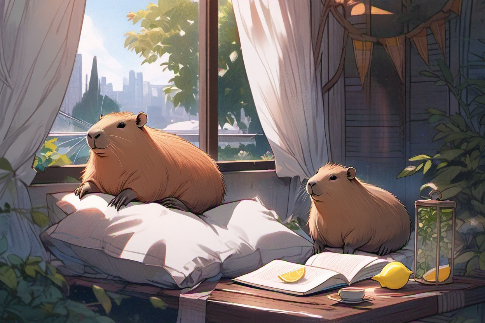

Journal · 2026-06-27
Mon Mode de Vie · Me_Honey
☀️ 休息日
周六没有安排什么学术任务。处理法语德语的日常功课，让脑子彻底松松弦。
晚上看了看下周的课程安排，期末临近了心里有点数。

☀️ Rest day
Saturday had no academic tasks scheduled. I worked through my daily French and German homework and let my mind fully unwind.
In the evening I glanced over next week's course schedule; with finals approaching, I had a rough sense of where things stood.
☀️ Jour de repos
Samedi, aucune tâche académique au programme. J'ai fait mes devoirs quotidiens de français et d'allemand et j'ai laissé mon esprit se détendre complètement.
Le soir, j'ai jeté un œil à l'emploi du temps de la semaine prochaine ; avec les examens qui approchent, j'avais une petite idée en tête.
☀️ Ruhetag
Am Samstag standen keine akademischen Aufgaben an. Ich habe meine täglichen Französisch- und Deutschaufgaben erledigt und meinen Kopf völlig entspannen lassen.
Am Abend warf ich einen Blick auf den Stundenplan der nächsten Woche; da die Prüfungen näher rückten, hatte ich schon eine ungefähre Vorstellung.